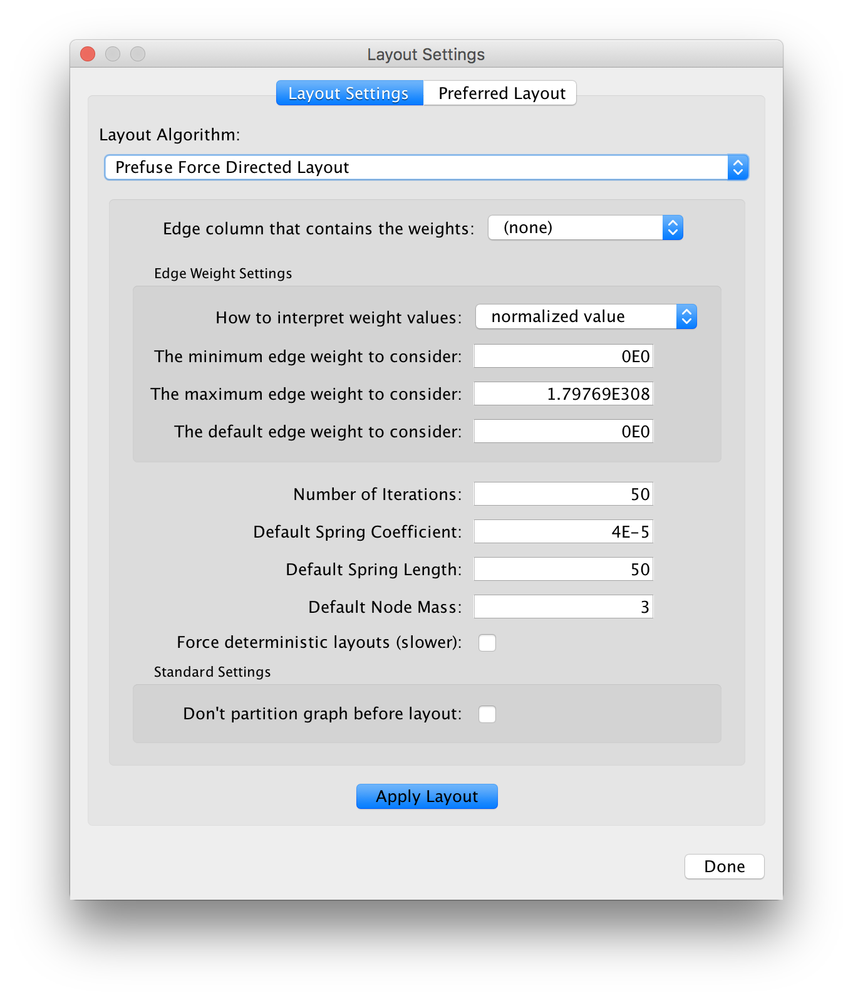
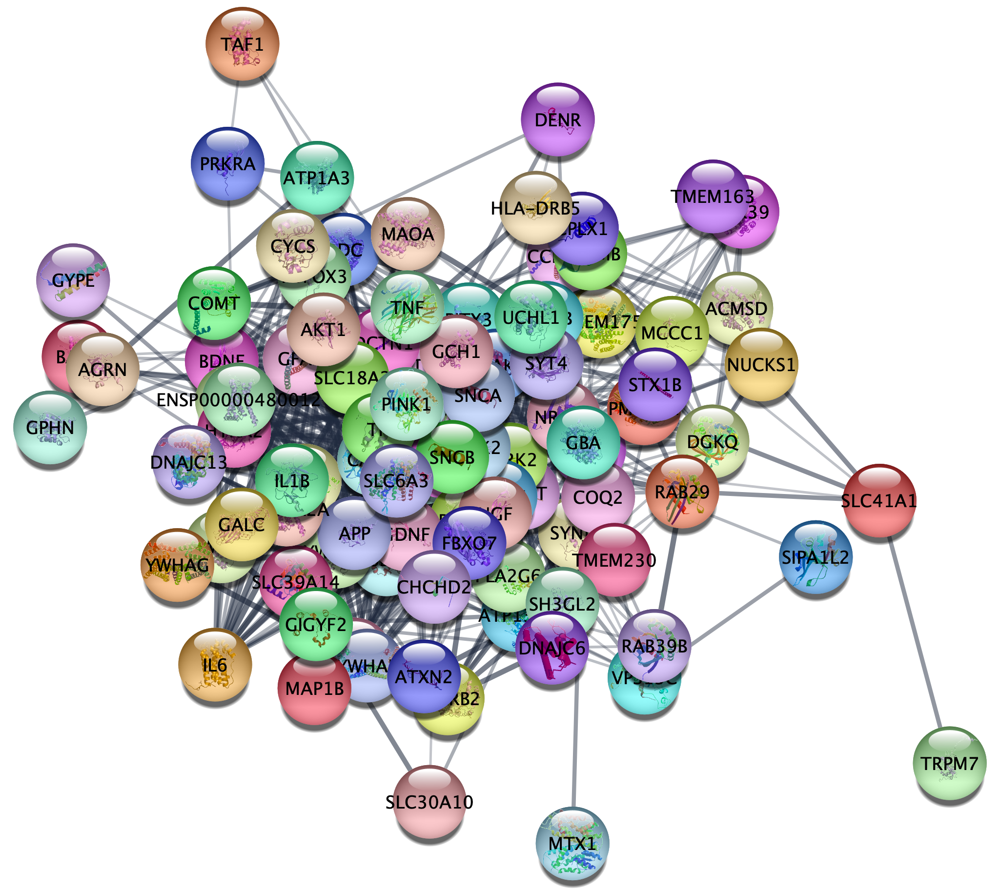

Advanced Visualization: Tuning Layouts
This short protocol reviews how to tune layout algorithms in Cytoscape.

Tuning Layouts
In general, most layouts can be tuned to improve the aesthetics. My approach:
- Go to
Layout→Settings . Select the layout of choice, for example Prefuse Force Directed Layout. - Change a parameter, for example Default Spring Coefficient or Default Spring Length.
- Click
Apply Layout . - Observe the results. If you get the result you want, click
Done , otherwise clickEdit→Undo and apply the layout again.

Example
Let's try this by changing the Spring Coefficient for the Prefuse Force Directed Layout. The network represents a disease-specific network from the STRING database.
Prefuse force-directed layout with default settings.
Prefuse force-directed layout with a decreased Spring Coefficient .